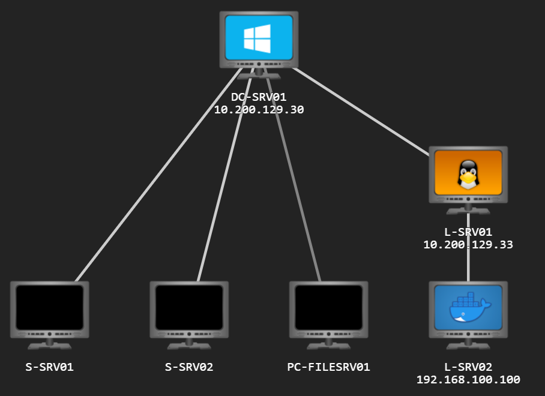
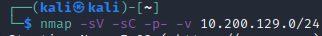
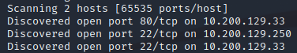
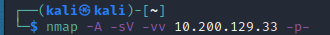
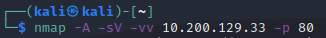

HoloLive Walkthrough - Task 8
Contents
HoloLive Walkthrough - Task 8¶
Task 8 - Initial Recon¶
Now for the actual question. First we are asked to scan the network, on the scoped ranges “10.200.x.0/24 and 192.168.100.0/24”. We cant scan a ‘x’ however, so how do we know what range to look for? This is easier than it sounds, it’s given in the image at the top of the page; in my case 10.200.129.0/24. This also gives the answer to the first octet (.33 in my case).

To get the octet the RIGHT way however, you should rely on the network scan. Following the provided details, it looks like this for me

Once the scan starts, you’ll quickly find the open ports found. By now, you should know that 80 is the standard HTTP port

Note: If you arent finding anything with your scan, even though you are sure the syntax is correct, you may have made the same dumb mistake I did, check your network is running

Now that we have our webserver, theres no point running the full scan we had for the whole subnet. Kill the existing scan and run a much more focused one.

This is going to take a while, why not take a break? Source: https://xkcd.com/303/

Now that we’re done with that, jump back through your logs to see what we found. Here you can see another port hiding in the non-standard range. Count your open ports for the server to get your next answer

Awesome, now we have scanned all the things, time to answer some specific questions We’re asked about the CME (Content Management Environment? Is this supposed to be CMS?) of the web server. We know this sits on port 80, so lets take an agressive look at it specifically. Note: this is also in the previous scan, but if you killed it already, this is a shorter scan for the single port

This gives us a nice block of data on the webserver

Extract out your data to answer each of the 3 next questions